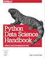

This notebook contains an excerpt from the Python Data Science Handbook by Jake VanderPlas; the content is available on GitHub.
The text is released under the CC-BY-NC-ND license, and code is released under the MIT license. If you find this content useful, please consider supporting the work by buying the book!
< Combining Datasets: Concat and Append | Contents | Aggregation and Grouping >

Combining Datasets: Merge and Join
One essential feature offered by Pandas is its high-performance, in-memory join and merge operations.
If you have ever worked with databases, you should be familiar with this type of data interaction.
The main interface for this is the pd.merge function, and we’ll see few examples of how this can work in practice.
For convenience, we will start by redefining the display() functionality from the previous section:
import pandas as pd
import numpy as np
class display(object):
"""Display HTML representation of multiple objects"""
template = """<div style="float: left; padding: 10px;">
<p style='font-family:"Courier New", Courier, monospace'>{0}</p>{1}
</div>"""
def __init__(self, *args):
self.args = args
def _repr_html_(self):
return '\n'.join(self.template.format(a, eval(a)._repr_html_())
for a in self.args)
def __repr__(self):
return '\n\n'.join(a + '\n' + repr(eval(a))
for a in self.args)
Relational Algebra
The behavior implemented in pd.merge() is a subset of what is known as relational algebra, which is a formal set of rules for manipulating relational data, and forms the conceptual foundation of operations available in most databases.
The strength of the relational algebra approach is that it proposes several primitive operations, which become the building blocks of more complicated operations on any dataset.
With this lexicon of fundamental operations implemented efficiently in a database or other program, a wide range of fairly complicated composite operations can be performed.
Pandas implements several of these fundamental building-blocks in the pd.merge() function and the related join() method of Series and Dataframes.
As we will see, these let you efficiently link data from different sources.
Categories of Joins
The pd.merge() function implements a number of types of joins: the one-to-one, many-to-one, and many-to-many joins.
All three types of joins are accessed via an identical call to the pd.merge() interface; the type of join performed depends on the form of the input data.
Here we will show simple examples of the three types of merges, and discuss detailed options further below.
One-to-one joins
Perhaps the simplest type of merge expresion is the one-to-one join, which is in many ways very similar to the column-wise concatenation seen in Combining Datasets: Concat & Append.
As a concrete example, consider the following two DataFrames which contain information on several employees in a company:
df1 = pd.DataFrame({'employee': ['Bob', 'Jake', 'Lisa', 'Sue'],
'group': ['Accounting', 'Engineering', 'Engineering', 'HR']})
df2 = pd.DataFrame({'employee': ['Lisa', 'Bob', 'Jake', 'Sue'],
'hire_date': [2004, 2008, 2012, 2014]})
display('df1', 'df2')
To combine this information into a single DataFrame, we can use the pd.merge() function:
df3 = pd.merge(df1, df2)
df3
The pd.merge() function recognizes that each DataFrame has an “employee” column, and automatically joins using this column as a key.
The result of the merge is a new DataFrame that combines the information from the two inputs.
Notice that the order of entries in each column is not necessarily maintained: in this case, the order of the “employee” column differs between df1 and df2, and the pd.merge() function correctly accounts for this.
Additionally, keep in mind that the merge in general discards the index, except in the special case of merges by index (see the left_index and right_index keywords, discussed momentarily).
Many-to-one joins
Many-to-one joins are joins in which one of the two key columns contains duplicate entries.
For the many-to-one case, the resulting DataFrame will preserve those duplicate entries as appropriate.
Consider the following example of a many-to-one join:
df4 = pd.DataFrame({'group': ['Accounting', 'Engineering', 'HR'],
'supervisor': ['Carly', 'Guido', 'Steve']})
display('df3', 'df4', 'pd.merge(df3, df4)')
The resulting DataFrame has an aditional column with the “supervisor” information, where the information is repeated in one or more locations as required by the inputs.
Many-to-many joins
Many-to-many joins are a bit confusing conceptually, but are nevertheless well defined.
If the key column in both the left and right array contains duplicates, then the result is a many-to-many merge.
This will be perhaps most clear with a concrete example.
Consider the following, where we have a DataFrame showing one or more skills associated with a particular group.
By performing a many-to-many join, we can recover the skills associated with any individual person:
df5 = pd.DataFrame({'group': ['Accounting', 'Accounting',
'Engineering', 'Engineering', 'HR', 'HR'],
'skills': ['math', 'spreadsheets', 'coding', 'linux',
'spreadsheets', 'organization']})
display('df1', 'df5', "pd.merge(df1, df5)")
These three types of joins can be used with other Pandas tools to implement a wide array of functionality.
But in practice, datasets are rarely as clean as the one we’re working with here.
In the following section we’ll consider some of the options provided by pd.merge() that enable you to tune how the join operations work.
Specification of the Merge Key
We’ve already seen the default behavior of pd.merge(): it looks for one or more matching column names between the two inputs, and uses this as the key.
However, often the column names will not match so nicely, and pd.merge() provides a variety of options for handling this.
The on keyword
Most simply, you can explicitly specify the name of the key column using the on keyword, which takes a column name or a list of column names:
display('df1', 'df2', "pd.merge(df1, df2, on='employee')")
This option works only if both the left and right DataFrames have the specified column name.
The left_on and right_on keywords
At times you may wish to merge two datasets with different column names; for example, we may have a dataset in which the employee name is labeled as “name” rather than “employee”.
In this case, we can use the left_on and right_on keywords to specify the two column names:
df3 = pd.DataFrame({'name': ['Bob', 'Jake', 'Lisa', 'Sue'],
'salary': [70000, 80000, 120000, 90000]})
display('df1', 'df3', 'pd.merge(df1, df3, left_on="employee", right_on="name")')
The result has a redundant column that we can drop if desired–for example, by using the drop() method of DataFrames:
pd.merge(df1, df3, left_on="employee", right_on="name").drop('name', axis=1)
The left_index and right_index keywords
Sometimes, rather than merging on a column, you would instead like to merge on an index. For example, your data might look like this:
df1a = df1.set_index('employee')
df2a = df2.set_index('employee')
display('df1a', 'df2a')
You can use the index as the key for merging by specifying the left_index and/or right_index flags in pd.merge():
display('df1a', 'df2a',
"pd.merge(df1a, df2a, left_index=True, right_index=True)")
For convenience, DataFrames implement the join() method, which performs a merge that defaults to joining on indices:
display('df1a', 'df2a', 'df1a.join(df2a)')
If you’d like to mix indices and columns, you can combine left_index with right_on or left_on with right_index to get the desired behavior:
display('df1a', 'df3', "pd.merge(df1a, df3, left_index=True, right_on='name')")
All of these options also work with multiple indices and/or multiple columns; the interface for this behavior is very intuitive. For more information on this, see the “Merge, Join, and Concatenate” section of the Pandas documentation.
Specifying Set Arithmetic for Joins
In all the preceding examples we have glossed over one important consideration in performing a join: the type of set arithmetic used in the join. This comes up when a value appears in one key column but not the other. Consider this example:
df6 = pd.DataFrame({'name': ['Peter', 'Paul', 'Mary'],
'food': ['fish', 'beans', 'bread']},
columns=['name', 'food'])
df7 = pd.DataFrame({'name': ['Mary', 'Joseph'],
'drink': ['wine', 'beer']},
columns=['name', 'drink'])
display('df6', 'df7', 'pd.merge(df6, df7)')
Here we have merged two datasets that have only a single “name” entry in common: Mary.
By default, the result contains the intersection of the two sets of inputs; this is what is known as an inner join.
We can specify this explicitly using the how keyword, which defaults to "inner":
pd.merge(df6, df7, how='inner')
Other options for the how keyword are 'outer', 'left', and 'right'.
An outer join returns a join over the union of the input columns, and fills in all missing values with NAs:
display('df6', 'df7', "pd.merge(df6, df7, how='outer')")
The left join and right join return joins over the left entries and right entries, respectively. For example:
display('df6', 'df7', "pd.merge(df6, df7, how='left')")
The output rows now correspond to the entries in the left input. Using
how='right' works in a similar manner.
All of these options can be applied straightforwardly to any of the preceding join types.
Overlapping Column Names: The suffixes Keyword
Finally, you may end up in a case where your two input DataFrames have conflicting column names.
Consider this example:
df8 = pd.DataFrame({'name': ['Bob', 'Jake', 'Lisa', 'Sue'],
'rank': [1, 2, 3, 4]})
df9 = pd.DataFrame({'name': ['Bob', 'Jake', 'Lisa', 'Sue'],
'rank': [3, 1, 4, 2]})
display('df8', 'df9', 'pd.merge(df8, df9, on="name")')
Because the output would have two conflicting column names, the merge function automatically appends a suffix _x or _y to make the output columns unique.
If these defaults are inappropriate, it is possible to specify a custom suffix using the suffixes keyword:
display('df8', 'df9', 'pd.merge(df8, df9, on="name", suffixes=["_L", "_R"])')
These suffixes work in any of the possible join patterns, and work also if there are multiple overlapping columns.
For more information on these patterns, see Aggregation and Grouping where we dive a bit deeper into relational algebra. Also see the Pandas “Merge, Join and Concatenate” documentation for further discussion of these topics.
Example: US States Data
Merge and join operations come up most often when combining data from different sources. Here we will consider an example of some data about US states and their populations. The data files can be found at http://github.com/jakevdp/data-USstates/:
# Following are shell commands to download the data
# !curl -O https://raw.githubusercontent.com/jakevdp/data-USstates/master/state-population.csv
# !curl -O https://raw.githubusercontent.com/jakevdp/data-USstates/master/state-areas.csv
# !curl -O https://raw.githubusercontent.com/jakevdp/data-USstates/master/state-abbrevs.csv
Let’s take a look at the three datasets, using the Pandas read_csv() function:
pop = pd.read_csv('data/state-population.csv')
areas = pd.read_csv('data/state-areas.csv')
abbrevs = pd.read_csv('data/state-abbrevs.csv')
display('pop.head()', 'areas.head()', 'abbrevs.head()')
Given this information, say we want to compute a relatively straightforward result: rank US states and territories by their 2010 population density. We clearly have the data here to find this result, but we’ll have to combine the datasets to find the result.
We’ll start with a many-to-one merge that will give us the full state name within the population DataFrame.
We want to merge based on the state/region column of pop, and the abbreviation column of abbrevs.
We’ll use how='outer' to make sure no data is thrown away due to mismatched labels.
merged = pd.merge(pop, abbrevs, how='outer',
left_on='state/region', right_on='abbreviation')
merged = merged.drop('abbreviation', 1) # drop duplicate info
merged.head()
Let’s double-check whether there were any mismatches here, which we can do by looking for rows with nulls:
merged.isnull().any()
Some of the population info is null; let’s figure out which these are!
merged[merged['population'].isnull()].head()
It appears that all the null population values are from Puerto Rico prior to the year 2000; this is likely due to this data not being available from the original source.
More importantly, we see also that some of the new state entries are also null, which means that there was no corresponding entry in the abbrevs key!
Let’s figure out which regions lack this match:
merged.loc[merged['state'].isnull(), 'state/region'].unique()
We can quickly infer the issue: our population data includes entries for Puerto Rico (PR) and the United States as a whole (USA), while these entries do not appear in the state abbreviation key. We can fix these quickly by filling in appropriate entries:
merged.loc[merged['state/region'] == 'PR', 'state'] = 'Puerto Rico'
merged.loc[merged['state/region'] == 'USA', 'state'] = 'United States'
merged.isnull().any()
No more nulls in the state column: we’re all set!
Now we can merge the result with the area data using a similar procedure.
Examining our results, we will want to join on the state column in both:
final = pd.merge(merged, areas, on='state', how='left')
final.head()
Again, let’s check for nulls to see if there were any mismatches:
final.isnull().any()
There are nulls in the area column; we can take a look to see which regions were ignored here:
final['state'][final['area (sq. mi)'].isnull()].unique()
We see that our areas DataFrame does not contain the area of the United States as a whole.
We could insert the appropriate value (using the sum of all state areas, for instance), but in this case we’ll just drop the null values because the population density of the entire United States is not relevant to our current discussion:
final.dropna(inplace=True)
final.head()
Now we have all the data we need. To answer the question of interest, let’s first select the portion of the data corresponding with the year 2000, and the total population.
We’ll use the query() function to do this quickly (this requires the numexpr package to be installed; see High-Performance Pandas: eval() and query()):
data2010 = final.query("year == 2010 & ages == 'total'")
data2010.head()
Now let’s compute the population density and display it in order. We’ll start by re-indexing our data on the state, and then compute the result:
data2010.set_index('state', inplace=True)
density = data2010['population'] / data2010['area (sq. mi)']
density.sort_values(ascending=False, inplace=True)
density.head()
The result is a ranking of US states plus Washington, DC, and Puerto Rico in order of their 2010 population density, in residents per square mile. We can see that by far the densest region in this dataset is Washington, DC (i.e., the District of Columbia); among states, the densest is New Jersey.
We can also check the end of the list:
density.tail()
We see that the least dense state, by far, is Alaska, averaging slightly over one resident per square mile.
This type of messy data merging is a common task when trying to answer questions using real-world data sources. I hope that this example has given you an idea of the ways you can combine tools we’ve covered in order to gain insight from your data!
< Combining Datasets: Concat and Append | Contents | Aggregation and Grouping >